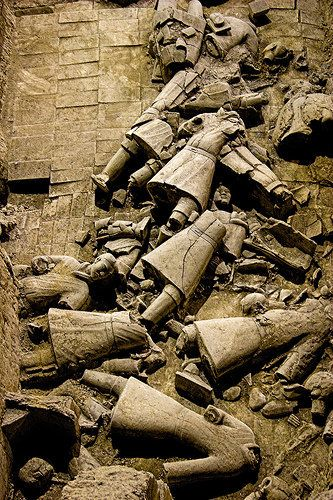

Scientific Perspective
Preservation and restoration techniques
Techniques for the conservation and restoration of terracotta warriors are also an important scientific and technological aspect. Due to the size and complexity of these terracotta warriors, preserving them from the effects of time and natural erosion requires advanced technologies and methods. Scientists and engineers are constantly working to develop new methods to ensure the preservation and restoration of the Terracotta Warriors.
Technological displays
In the Terracotta Warriors Museum, visitors can better understand these ancient works through a variety of interactive displays and multimedia technologies. The use of technology allows visitors to gain a deeper understanding of the history of the Terracotta Warriors and the stories behind them.
Research and Analysis
Advances in modern technology have also helped to study the Terracotta Warriors in depth. Through the use of non-invasive techniques such as laser scanning and X-ray imaging, the internal structure and composition of these terracotta warriors can be analyzed in greater detail. These analyses help reveal more information about their production process and history.